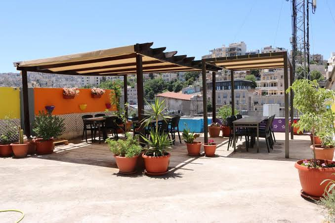
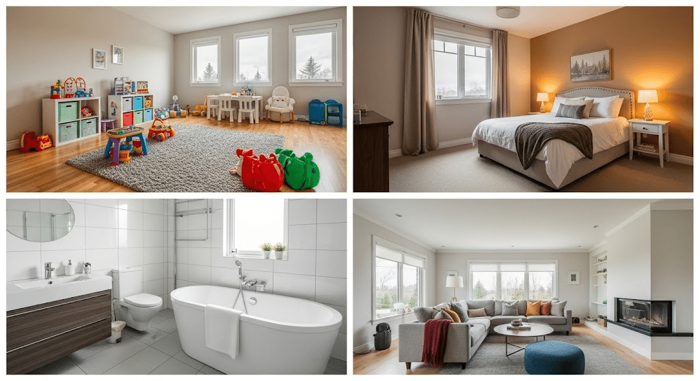
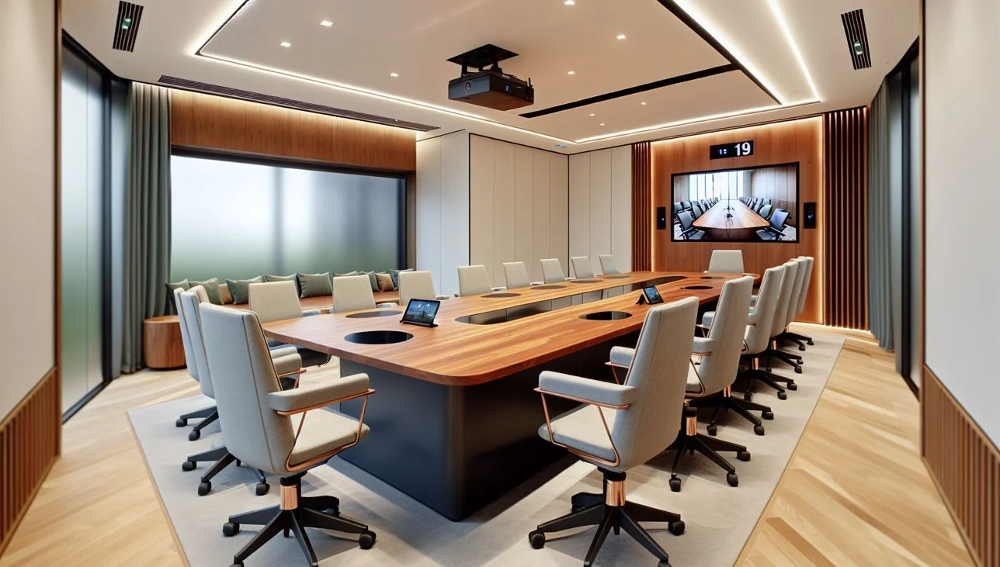

Gallery
Explore the beauty and comfort of our guest house:



.jpg)
.jpg)
Where comfort meets elegance in the heart of Accra
Our guest house is more than just a place to stay — it’s a home away from home. Designed with a blend of modern architecture and traditional Ghanaian hospitality, we provide a serene environment for travelers, families, and professionals alike. From the moment you step through our doors, you’ll be greeted with warmth, personalized service, and attention to detail that ensures your stay is memorable.
Whether you’re visiting Accra for business meetings, cultural exploration, or simply to relax, our guest house offers the perfect balance of convenience and tranquility. With spacious rooms, lush gardens, and easy access to the city’s vibrant attractions, we make every guest feel valued and at ease.
Explore the beauty and comfort of our guest house:



"The staff were incredibly welcoming, and the rooms were spotless. I felt at home instantly!"
- Ama, Ghana"Perfect location, delicious food, and a peaceful atmosphere. Highly recommended for anyone visiting Accra."
- James, UK"I loved the spa treatments and the garden view from my balcony. Truly relaxing!"
- Fatima, NigeriaLocated in the heart of Accra, our guest house offers easy access to some of the city’s most exciting attractions:
Ready to plan your stay? We offer flexible booking options to suit your needs. Whether you’re reserving a single night or an extended stay, our team is here to assist. Book directly through our website for exclusive discounts and complimentary breakfast.
For group bookings, conferences, or special events, please contact our reservations desk to customize your package. We pride ourselves on tailoring experiences to meet your expectations.
We’d love to hear from you! Reach out to us for bookings, inquiries, or special requests.
Email: info@crisislodge.com
Phone: +233-123-456-789
Address: Dome, Accra, Ghana